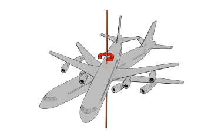
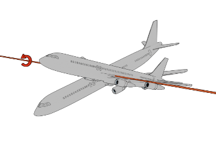
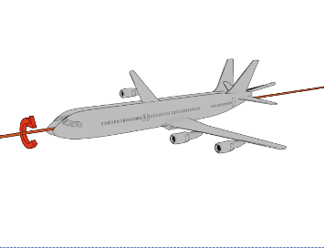

7. 세슘 활용 실습
1. 세슘은 기본적으로 대용량의 3D 지도 자료를 한 번에 전송하지 않고 잘게 쪼개서 전송한다. 이러한 기술을 무엇이라 하는가?
- 스트리밍
- down bit
- 분할 전송
- 3D Tiles
2. 세슘은 모든 현재 보여줘야 하는 모든 파일이 다 다운로드 될 때 까지 한참 기다린 후 화면에 짠 하고 한꺼번에 나타나는 것이 아닌, 조금씩이라도 다운로드받은 내용을 지속적으로 화면에 보여주는 방식을 사용한다. 이런 기술을 무엇이라 하는가?
- 스트리밍
- down bit
- 분할 전송
- 3D Tiles
3. 세슘이 기본 제공하는 기능이 아닌 것은?
- Cesium World Terrain(전 세계의 3차원 지도)
- Imagery(위성 영상)
- OSM 건물
- 네이버지도
4. 세슘에 저장한 자료를 java script 언어로 프로그래밍해 볼 수 있게 해주는 cesium 의 구성 요소는?
- cesium ion
- cesium for unity
- cesium js
- cesium for o3de
5. 세슘에 저장한 자료를 이용해 전 세계 지도가 3D형태로 보여지고 내가 만들어 올린 3D asset 들이 3D 지도 위에 정확하게 위치하는 3D 게임을 만들고 싶을 때 사용하는 cesium 구성 요소는?
- cesium ion
- cesium for unreal
- cesium js
- cesium
6. 세슘을 이용해 디지털트윈 웹버전을 만들려고 한다. 이 때 사용하는 세슘의 구성 요소는?
- cesium ion
- cesium for unity
- cesium js
- cesium for o3de
7. 세슘을 이용해 디지털트윈 웹버전을 만들려고 개발환경을 구축하려 한다. 이 때 설치하는 프로그램으로 자바스크립트를 웹브라우저가 아닌 곳에서 실행할 수 있도록 만들어 주는 프로그램은?
- visual studio code
- node.js
- express.js
- cesium js
8. node.js를 기반으로 실행되는 프로그램으로 내 PC를 웹서버로 만들어 주는 프로그램은?
- visual studio code
- node.js
- express.js
- cesium js
9. 다음 중 heading에 대해 설명한 그림은?



10. 세슘을 이용해 디지털트윈 웹버전을 만들기 위해 cisium js를 사용해 프로그램을 만들었다. 다음과 같은 코드에서 AAAA 부분에 실제로 넣어야 하는 값은?
Cesium.Ion.defaultAccessToken = "AAAA"
- cesium ion에 로그인할 때 사용하는 user ID
- cesium ion에 로그인할 때 사용하는 password
- cesium ion에서 제공하는 토큰
- cesium ion에서 제공하는 asset ID